08 Sep 2026
MAYO-BINKA: THE IRON-ORE DEPOSIT THAT COULD TACKLE UNEMPLOYMENT, PROMOTE SUSTAINABLE DEVELOPMENT AND ALLEVIATE SUFFERING IN CAMEROON'S NORTH-WEST REGION. A properly developed Mayo-Binka iron-ore project could give rise to more than 70 interconnected companies...
Article
By Dr. David Makongo
03 Sep 2026
MINTA’S 8,800 KM² MINING FOOTPRINT: CAMEROONIANS DESERVE FULL DISCLOSURE. Lion Rock Minerals Limited is an Australian company listed on the Australian Securities Exchange under the symbol ASX: LRM...
01 Sep 2026
CAMEROON’S AMERICAN MINING AMBITION: GOOD ON PAPER, BUT REFORM MUST COME FIRST. Cameroon’s desire to position itself as a credible mining destination for American investors is encouraging...
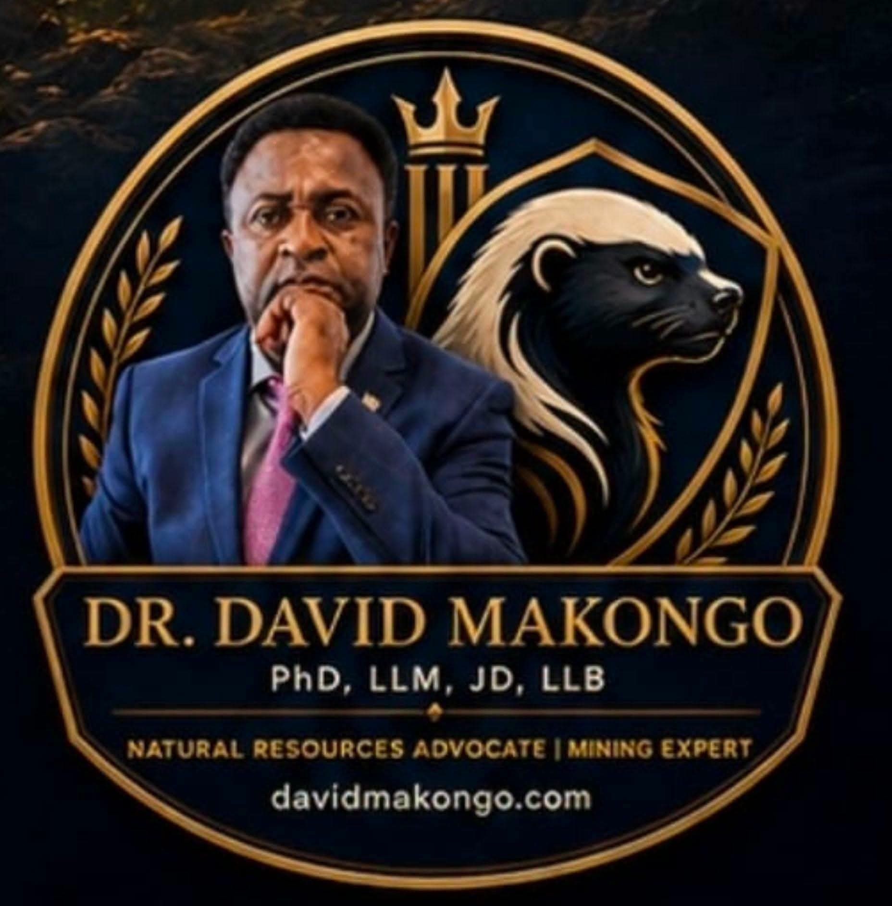
25 Aug 2026
ONE PEOPLE. TWO REGIONS. ONE POWERFUL VOICE. A joint North West–South West New Elites Association could become the key to unlocking genuine cooperation and unity between our two regions.
20 Aug 2026
ON AUGUST 20, 2026, PRESIDENT MAMADI DOUMBOUYA CREATED TWO NEW ADMINISTRATIVE REGIONS — SIGUIRI AND BEYLA — AS WELL AS ELEVEN NEW PREFECTURES
Zamboï Mining Disaster: Analysis of the Facts, Difficult Questions for Establishing the Truth, and Recommendations
03 Aug 2026
CAMEROON NEEDS A NEW NATIONAL IDENTITY, NOT ANOTHER POLITICAL LABEL
24 Jul 2026
Humbled and Honoured: Gratitude for the 2025 International Golden Star Award and Cameroon's Man of the Year
22 Jul 2026
ISSA TCHIROMA'S CALL TO THE CAMEROON MILITARY TO "TAKE HIM HOME": Critical analysis by Dr. David Makongo
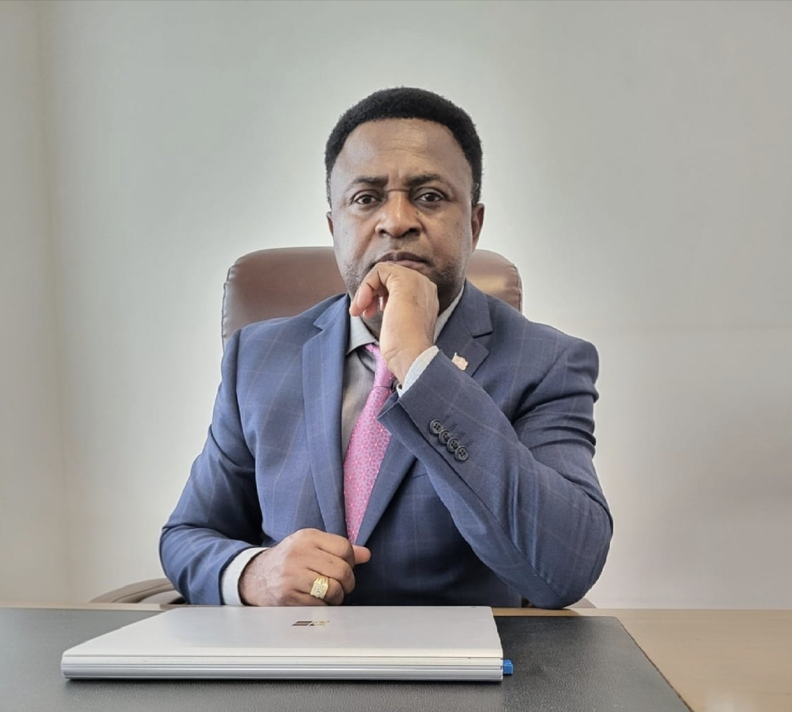
11 Jul 2026
A Second Letter to the Secretary-General at the Presidency: Why the Gold Scandal Demands a Whole-of-Government Investigation
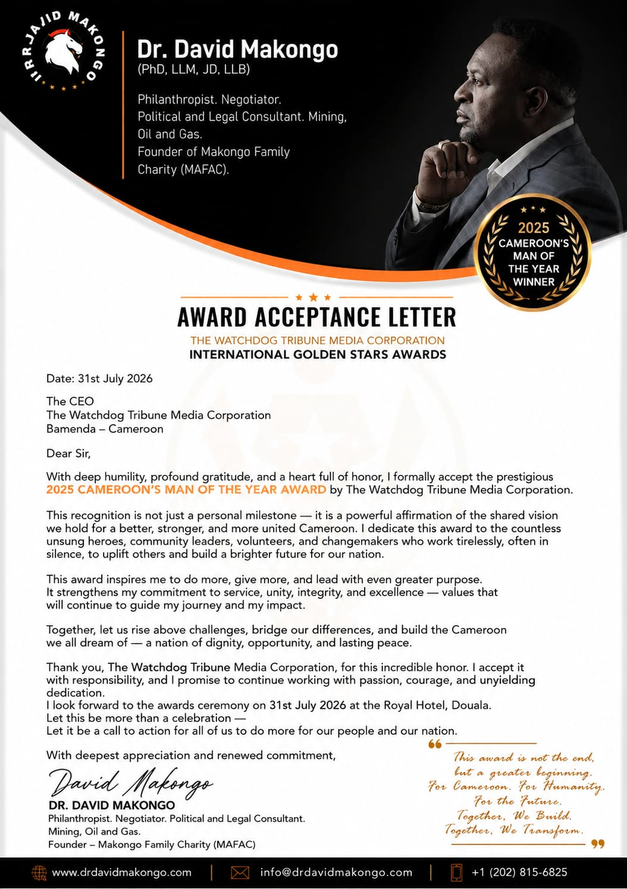
10 Jul 2026
To Every Young Person Who Has Lost Hope—Don’t Give Up On Yourself
24 Jun 2026
Why Guinea Must Refine and Certify Its Gold at Home
11 Jun 2026
Republic of Cameroon: Is the Solution an Anglophone Vice President?
10 Jun 2026
Strategic Recommendations for the Eradication of Gold Trafficking and the Restoration of State Control over Cameroon’s Gold Industry
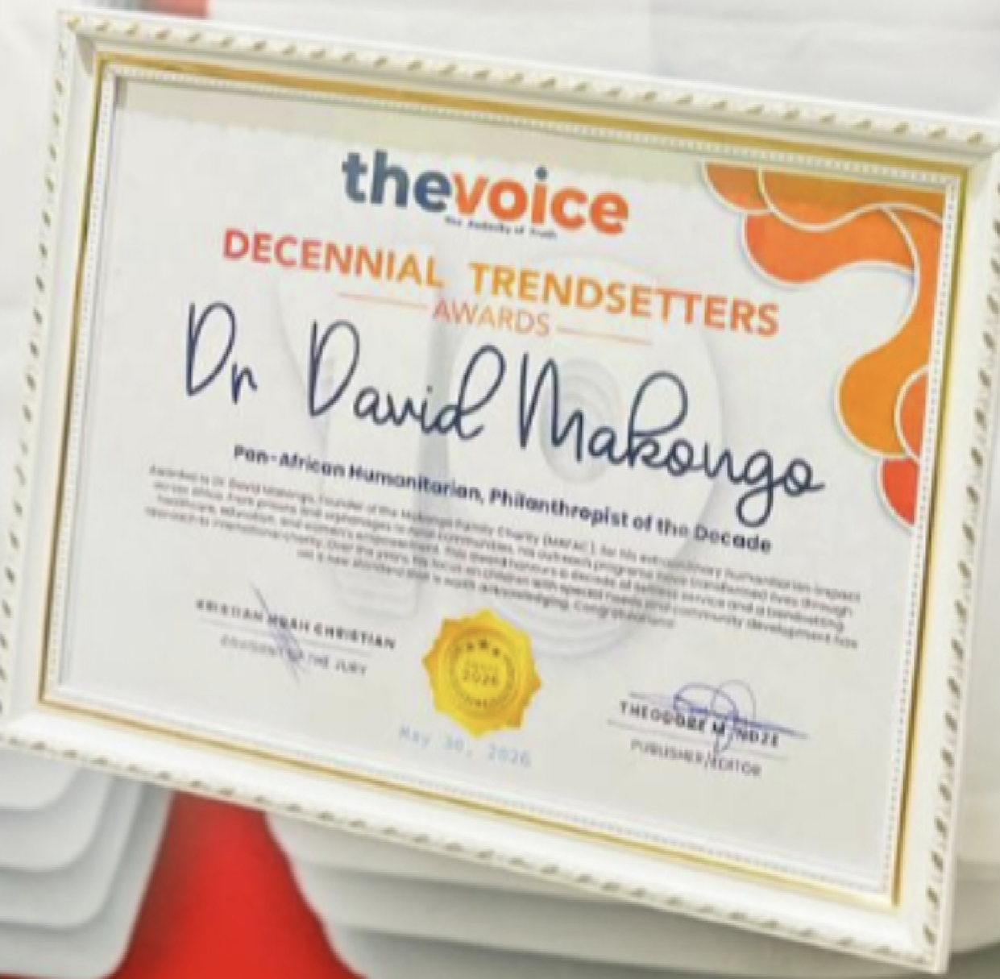
31 May 2026
Honored and Grateful: Pan-African Humanitarian Award
30 May 2026
Cameroon's Silent Disease
29 May 2026
Cameroon's Debt Has Hit CFA 15.4 Trillion or 26 Billion Dollars
27 May 2026
Senegal: Dismissed Prime Minister Sonko, Elected President of Parliament
23 May 2026
Senegal: When Revolution Meets Government
16 May 2026
President Trump's Triumphant Visit to China: An Everlasting Lesson
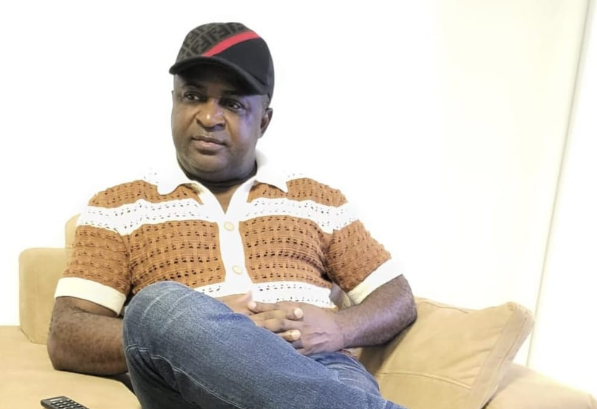
8 May 2026
The Next Cameroon Needs a New Anglophone Class
7 May 2026
Cameroon’s Crackdown on Illegal Mining Must Go Beyond Speeches
1 May 2026
Pan-African Distinction: Dr. David Makongo Crowned Philanthropist of the Decade
Terrorist Attacks in Mali: An Urgent Call for African Unity
24 Apr 2026
Dr. David Makongo calls for restraint and dialogue in the face of social tensions
21 Apr 2026
Rethinking Peace: The Politics Behind the Papal Visit to Cameroon
5 Apr 2026
Cameroon: controversy over a constitutional reform seen as inherited from the colonial order (Analysis by Dr. David Makongo)
4 Apr 2026
Cameroon: Dilemma of a nation under a foreign colonial Constitution.
3 Apr 2026
From Two States Federation to A Bloody Arms Conflict: Southern Cameroons Resource Course!!
21 Mar 2026
Eid Mubarak: a message of unity and responsibility addressed to the people of Guinea
9 Mar 2026
International Women’s Day: Dr. David Makongo’s tribute message to women worldwide
Feb 17, 2026
Dr. David Makongo: “Betrayal only comes from people who are close enough.” (Opinion)
Feb 16, 2026
Anglophone Crisis in Cameroon: Dr. David Makongo, the steady voice for peace
By Makongo team
22 November 2024
Fondation Makongo Family Charity : Un engagement pour la paix et l’assainissement à Bambeto-Hamdallaye
flammeguinee.com
By La Rédaction
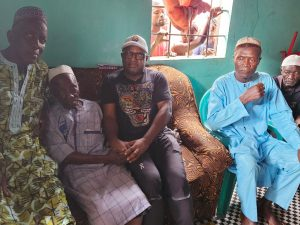
19 November 2024
Kamsar : Dr David Makongo en visite chez le patriarche, porteur du message des sages au Général Mamadi Doumbouya
18 November 2024
Kamsar : Dr David Makongo et la Jeunesse de la Basse Côte appellent à la paix et le vivre-ensemble et rendent hommage au Général Doumbouya
guineebiz.com
By Abdoulaye Ndiaye
liberationinfo.com
envergure224.com
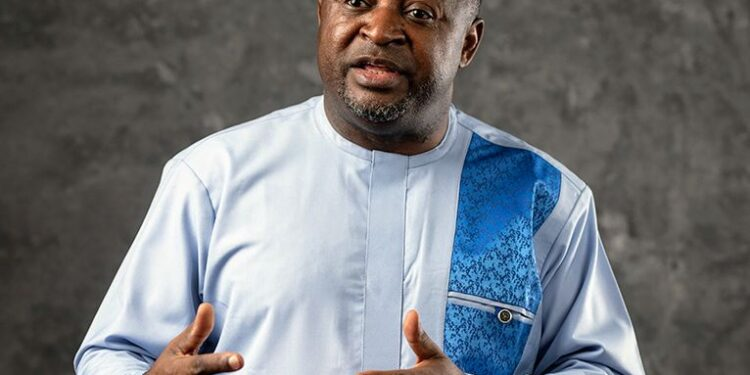
11 November 2024
Victoire de Donald Trump aux États-Unis : Dr David Makongo appelle à une nouvelle ère dans les relations entre l’Amérique et l’Afrique
africavision7.com
By Aboubacar Toure
29 October 2024
Contentieux Minier : Ashapura Condamnée à Verser 150 Millions GNF par Jour à Fako Resources jusqu’à la Restitution du Permis
lesinfosdeguinee.com
By Ibrahima Limbita Camara
23 October 2024
Affaire Fako Resources et Anna GEMS : Ashapura condamnée à 150 millions de GNF par jour pour non-restitution du permis d’exploitation
guineemining.info
By Ibrahima Ndiaye
21 October 2024
guineeprogres.net
By Directeur Publication
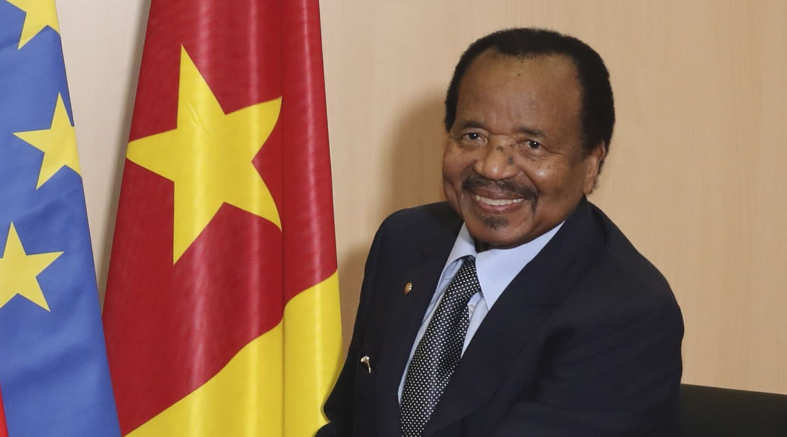
15 October 2024
Is Paul Biya the future of Cameroon?To ask Paul Biya’s whereabouts though not a taboo topic is dishonest and disgraceful.
Makongo New
7 September 2024
Beijing :Dr David Makongo plébiscité par le Président Mamadi Doumbouya pour ses actions en faveur de la paix et du développement en Guinée
aubeafrique.com
By Mr kourouma
2 September 2024
Dr David Makongo au Sommet Chine-Afrique : Un Expert de Poids pour la Guinée
By Abdoulaye NDiaye
27 August 2024
Guinée : MAFAC offre les bourses d’études à six jeunes pour le Ghana au nom du Général Mamadi Doumbouya
planete224.com
By Toumany CAMARA
20 August 2024
La Fondation MAFAC renforce la paix et la cohésion sociale à Conakry et en Haute Guinée
By Societe
1 August 2024
Guinée : Geste Humanitaire de Dr Makongo suite au Décès du DJ Kolo de Takana Zion
27 Jul 2024
Dr David Makongo parmi les officiels guinéens pour les JO 2024 de Paris
Planete224.com
By Aboubacar Barry
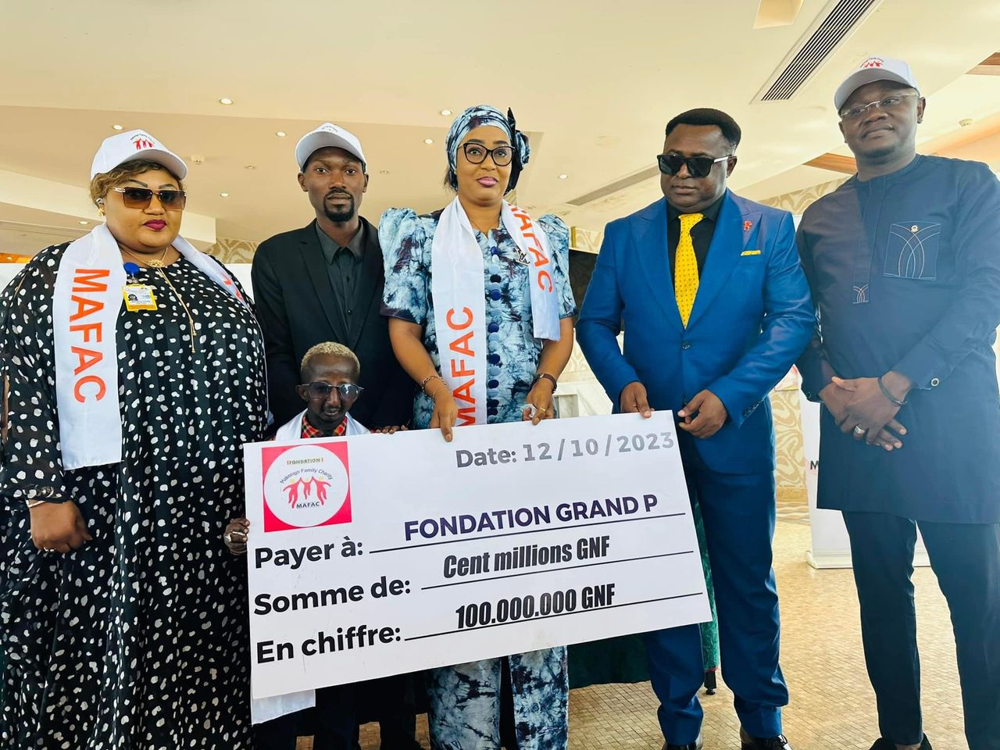
J’ai toujours dit ici que Grand P est mon meilleur ami, c’est une personne formidable.
facebook.com
By Michel Ghou
Arcom-Mérite Awards Guinée 6ème édition : Gros plan sur le Secrétaire général du SLECG ( A. Soumah )
By Afrikinfomedias
APaix et la cohésion sociale : Le message du président de la MAFAC, Dr. David Makongo
Africavision7.com/
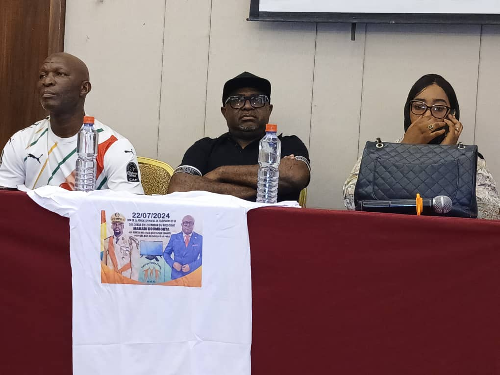
24 July 2024
JO Paris 2024: Dr David Makongo offre des écrans téléviseurs à la jeunesse
Flammeguinee.com
23 July 2024
Le Chef de l’État, le Gl Mamadi Doumbouya est un envoyé de Dieu…» précisé Dr. David Makongo
By Sékouba Kourouma
21 July 2024
Kaloum : Dr David Makongo sur le terrain pour l’assainissement
6 Jul 2024
Mines & Médias: Dr David Makongo, un nouvel ambassadeur de la promotion et de la quiétude sociale
28 Jun 2024
Deuxième édition du FOMIDE : Dr. David Makongo invite les acteurs miniers
By Mr Kourouma
Dr David Makongo au Forum des Mines : « on doit remercier le Président Mamadi Doumbouya, pour la paix que nous avons aujourd’hui en Guinée
guineechrono.com
By La Rédaction de Guineechrono
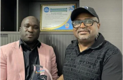
11 May 2024
La paix et la cohésion sociale: Le PDG Dr David Makongo auprès des jeunes de Guinée engagés
26 Mar 2024
Kaloum: Fondation Makongo Family Charity accompagne le football nocturne version féminine
24 March 2024
Video: Dr David Makongo on Peace and Social Cohesion
YouTube
Ramadan 2024
Dr David Makongo: Soutien incontournable du tournoi féminin au nom de la paix à Kaloum
Guineemining.info
11 March 2024
Paix et la cohésion sociale: Le message du Président de la MAFAC, Dr David Makongo
Africavision7.com
7 Mar 2024
Distinction: Le Grand Prix Mossolou décerné à la Fondation Makongo de Family Charity
Guineeprogres.net